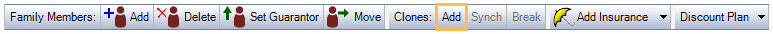
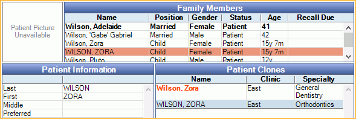
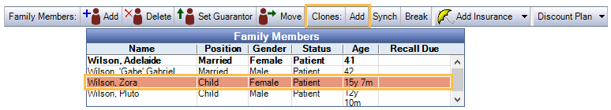
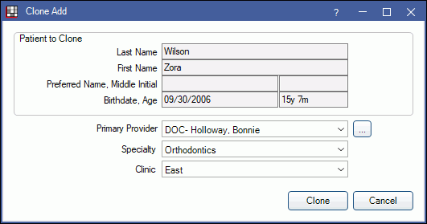
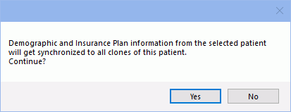

Clone
Patient Clones are a useful feature for practices that have different types of providers who treat the same patient. The tool can be used to create one or more clones of the original patient, with data continually synched between patient and clone.
For example, a general dentistry office may also provide orthodontic and endodontic treatment.
- Use the original patient record to track general dentistry work.
- Create a patient clone with a specialty of orthodontics to track orthodontic work.
- Create another patient clone with a specialty of endodontics to track endodontic work.
Turn on Patient Clones
For patient clone options to show in the interface, Patient Clone must be turned on in Show Features.
Patient Clones in the Family Module
Manage patient clones, create new patient clones, and view patient clone relationships in the Family Module.
The original patient is listed in mixed case (e.g., Smith, John). Clones are listed in all capital letters (e.g., SMITH, JOHN).
Family Members grid: By default, patient clones are added to the original patient's family.
Another option is to place new patient clones in their own family, and associate the clone to the original via Super Family. This is useful when offices want to maintain separate financial accounts for each clone (e.g., send separate statements for orthodontic versus dentistry work).
To add a clone to a super family:
- Turn on Super Families and restart Open Dental.
- Enable the preference for New patient clones use super family instead of regular family.
- Create the clone. A separate Super Family grid will show in the Family Module with the original patient as the super head and clones as family members.
Patient Clones grid: This grid shows when one or more patient clones exist. The original patient will list in red with clones listed below.
Specialty: Assigning specialties is optional, but can be a useful method of differentiating patient clones.
- Set up specialty options in Definitions: Clinic Specialties
- Assign specialties when creating the clone or on the Edit Patient Information
- Include specialty in the Title Bar and Patient Select Area of the Account Module. See Miscellaneous Setup.
- Include specialty in the Select Patient window and Chart Patient Information. See Display Fields.
Add Patient Clones
In the Family Module, select the original patient from the Family Members. In the toolbar, click Add to the right of Clones.

In the Clone Add window, select the clone's primary provider, specialty and clinic.

Primary Provider: Defaults to the provider selected on the patient's Edit Patient Information window. Click the dropdown or [...] to change.
Specialty: The clone's specialty. Unspecified can only be selected if a clinic in the database has no specialty associated.
Clinic: The clone's clinic. Only clinics associated with the selected specialty are options (See Clinic List).
Click Clone to create the clone. The new patient clone will be created in all caps.

Break Patient-Clone Relationships
To break the relationship between a single patient clone and the original patient:
- In the Family module, select the patient clone.
- Click Break.
- A confirmation message will show. Click Yes to break the relationship.
To break all relationships between the original patient and every patient clone:
- In the Family module, select the original patient.
- Click Break.
- A confirmation message will show. Click Yes to break the relationship.
Once the relationship is broken, clones no longer list in the Patient Clones grid, but will still list as family members or super family members if the clone has not been moved from the family or super family.
Link Duplicate Patients as Clones
If a duplicate account exists for a patient, and the duplicate account should be a patient clone, users can use the patient merge tool to merge the duplicate account into a fresh patient clone.
- On the original account (the account to be kept), create a patient clone (see above).
- Open the Merge Patients tool.
- Merge the duplicate account into the newly created patient clone.
Synch Original Patient and Clone
The following information can be synched between the original patient and clones.
- First Name
- Last Name
- Preferred Name
- Middle Initial
- Responsible Party
- Patient Status
- Gender
- Race
- Language
- SSN
- Position
- Address, Address 2, City, State, Zip
- Address Note
- Hm, Wireless, Wk, Phones
- Text Message OK
- Billing Type
- Fee Schedule
- Credit Type
- Medicaid ID
- Medical Urgent Note
- Ins Plan Info
Patient forms are not synched, however forms already created on the original patient are copied to the cloned patient. Forms created after the clone has been created are separate between the clone and the original patient.
Insurance coverage amounts are not synched (amounts used and benefits available), so insurance estimates may be inaccurate. To ensure both the original and clone reflect updated amounts, whenever an amount changes for one, add Adjustments to Insurance Benefits to the other.
This may not be an issue if general dental and orthodontic benefits are different and users have entered Ortho Lifetime Max and Percentage as Benefit Information.
Synch Information:
In the Family module, Family Members grid, select the patient or clone.
In the toolbar, click Synch.

Click Yes to continue.
A detailed list of synched changes will list. 
Click OK to close the window. Click Print to print a copy of all changes.
Troubleshooting
Version 17.1 and earlier: If the original patient's first and last name is in ALL CAPS, users may be blocked from creating a clone. To resolve, change the original patient name so first and/or last name is not in all capital letters (Smith, John). Then users will be allowed to create the clone.
Bridges to other software: Open Dental always sends the information of the original patient to bridged software, not the clone. If, in the bridged software, information is associated with the clone, users may have issues accessing it. We recommend moving all information to the original patient instead.